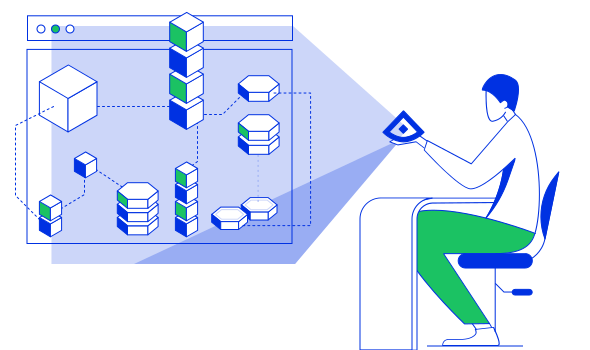

In this tutorial we will learn about Alcide Embedded Firewall Policies.
Alcide Embedded Firewall Policies basically enable developers & devops to capture their microservice know-how into a set of firewall rules that creates a whitelisted perimeter at the Pod level.
The policy embedding, comes in the shape and form of annotating Pod Specification within a deployed resource.
So whether this a plain Kubernetes YAML resource, a helm chart, we can capture security policy as code.

Alcide Embedded Policies are created by developers/devops either in Git or as part of an automation pipeline to control the "Allowed" network traffic for the application/micro-service.
By using Alcide Embedded Policies, new applications are immediately granted with the required access to operate, and only what's required.
For this tutorial you will need a Kubernetes cluster with enough permissions to deploy resources into it.
- Install and Set Up kubectl.
- Install Minikube, or any working Kubernetes Cluster
- Alcide Cloud Account

In order to implement Alcide Runtime Security features, we will need to onboard your Kubernetes cluster into your Alcide Cloud Account
- Login to your account: https://yourcompany.cloud.alcide.io
- On the left hand side menu, click on Create Data Center/Cluster
- Follow the steps in the UI wizard.
At this point you should be able to see your cluster, worker nodes, and workloads, in the Infrastructure View and the application components in your Application View

Policy Structure
Let's begin with few Alcide Embedded Policy examples:
policy.v1.alcide.io/outbound.ip.1: tcp://1.1.1.1/?ports=80
policy.v1.alcide.io/inbound.ip.2: tcp://any/?ports=any
policy.v1.alcide.io/outbound.dns.1: tcp://amazon.com/?ports=80
policy.v1.alcide.io/outbound.dns.2: https://*.amazon.com
policy.v1.alcide.io/outbound.service.1: tcp://my-service/?ports=80
policy.v1.alcide.io/inbound.service.2: tcp://my-service/?ports=80
policy.v1.alcide.io/outbound.endpoint.1: tcp://my-workload/?ports=80
policy.v1.alcide.io/inbound.endpoint.2: https://my-namespace.my-workload
policy.v1.alcide.io/outbound.namespace.1: tcp://my-namespace/?ports=80
policy.v1.alcide.io/inbound.namespace.2: tcp://my-namespace/?ports=any
For more details and examples go to Alcide Documentation
Run the deployment
We are going to use alcide/net-check image in order to initiate traffic from within your cluster to the next destinations:
- https://www.alcide.io
- https://www.google.com
- https://www.yahoo.com
kubectl run -it --rm --restart=Never --image alcide/net-check alcide-net-check \
www.alcide.io:443 \
www.google.com:443 \
www.yahoo.com:443
We are going to switch Alcide's Agent running mode - enforcement mode.
kubectl set env daemonsets/agent-nodelet -n alcide ALCIDE_WORKLOAD_ENFORCE_MODE=inline && kubectl rollout status -n alcide daemonset/agent-nodelet --watch
Try it now with Alcide Embedded Policies
Let's add Alcide Embedded Policies and initiate traffic to an allowed destination (www.alcide.io)
kubectl run -it --rm --restart=Never --image alcide/net-check --overrides='{ "apiVersion": "v1", "metadata": {"annotations": { "policy.v1.alcide.io/outbound.dns.1":"https://www.alcide.io" } } }' alcide-net-check \
www.alcide.io:443
All should work just as before.
Now, lets initiate traffic to non-allowed destinations (www.google.com or any other domain)
kubectl run -it --rm --restart=Never --image alcide/net-check --overrides='{ "apiVersion": "v1", "metadata": {"annotations": { "policy.v1.alcide.io/outbound.dns.1":"https://www.alcide.io" } } }' alcide-net-check \
www.google.com:443 \
www.yahoo.com:443
Now the traffic should be dropped
In this codelab we covered:
- Alcide Embedded Policy syntax
- Implemented Alcide Embedded Policy